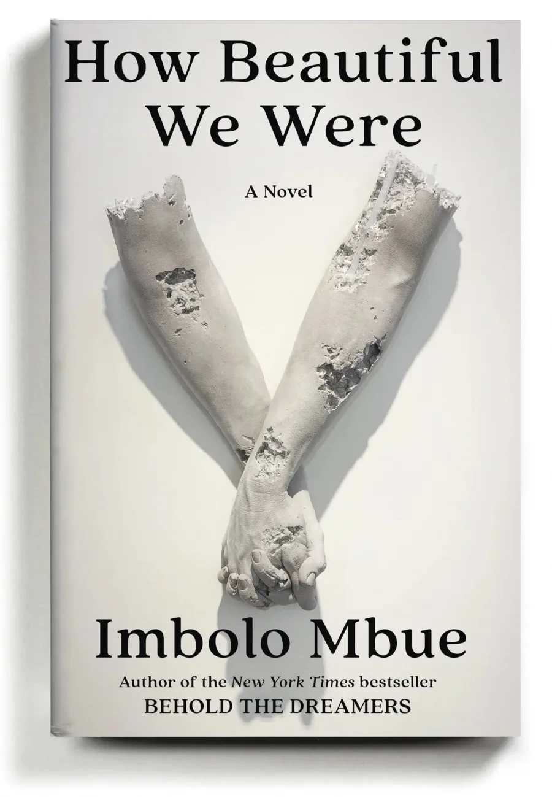
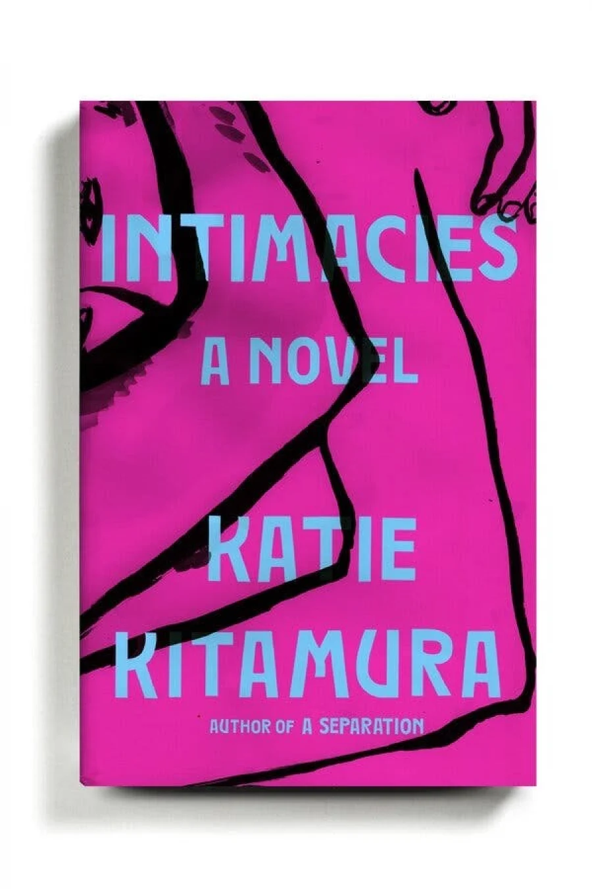
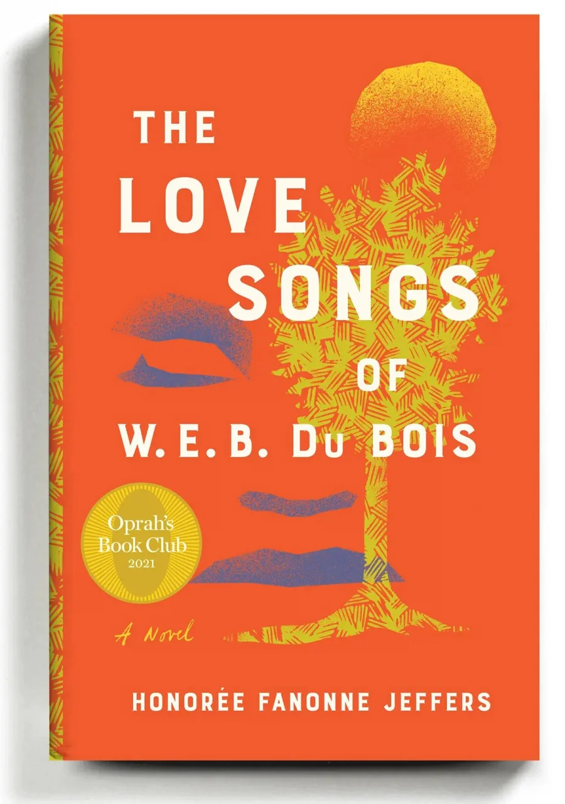
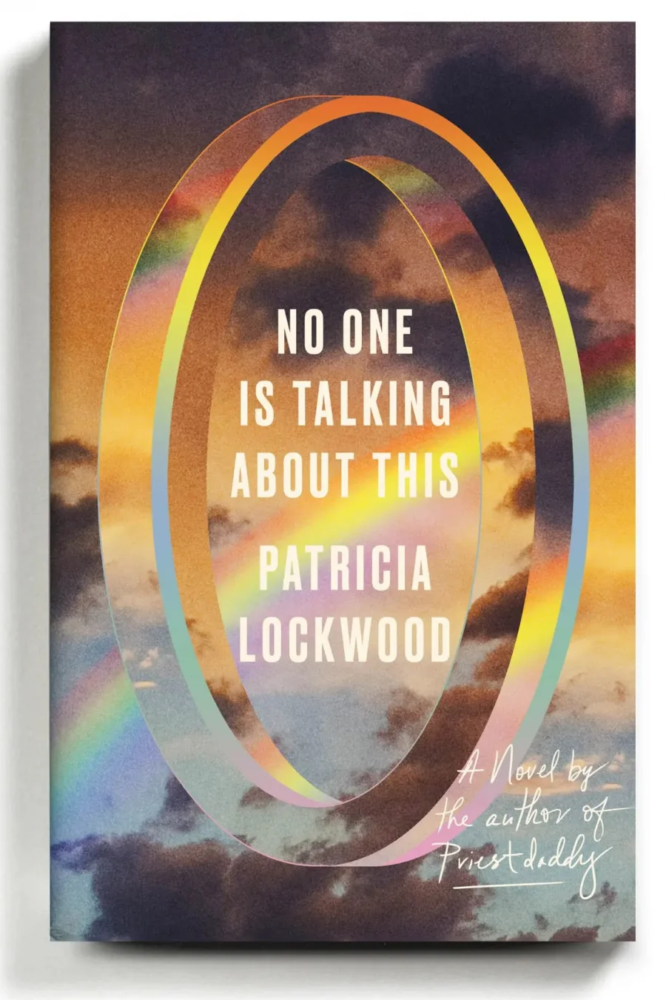
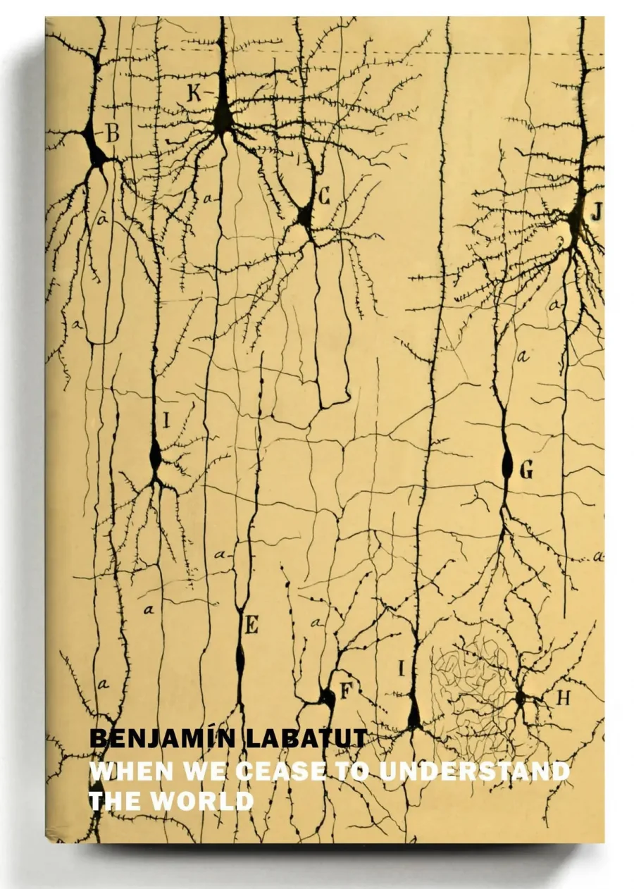
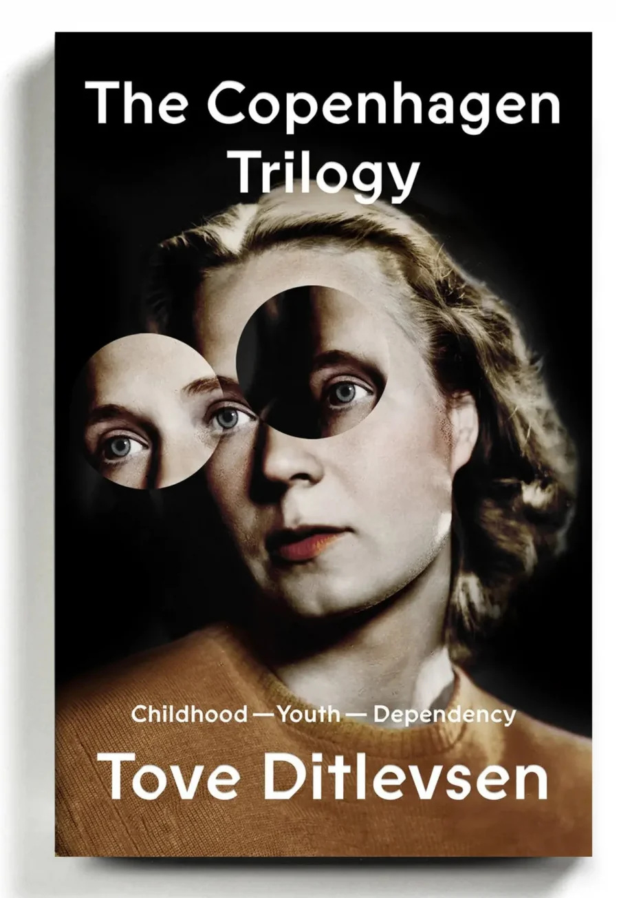
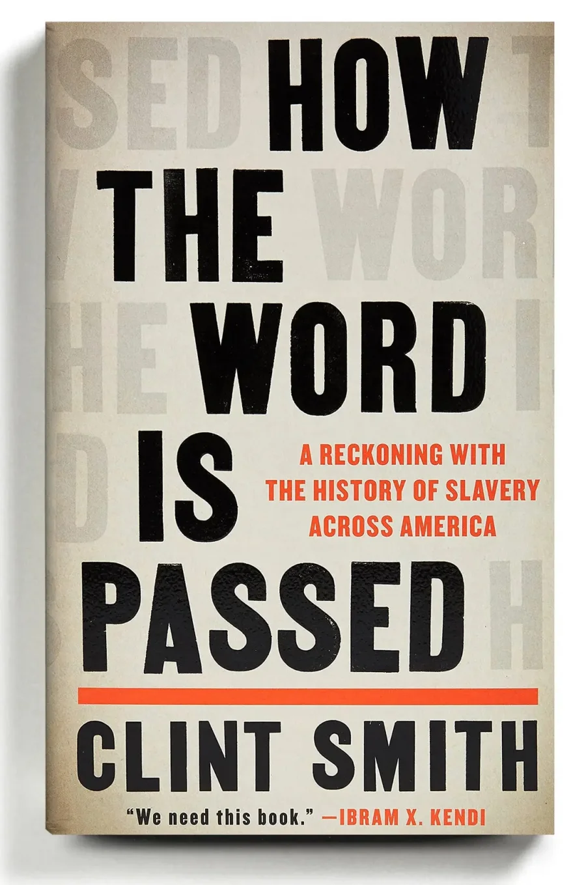
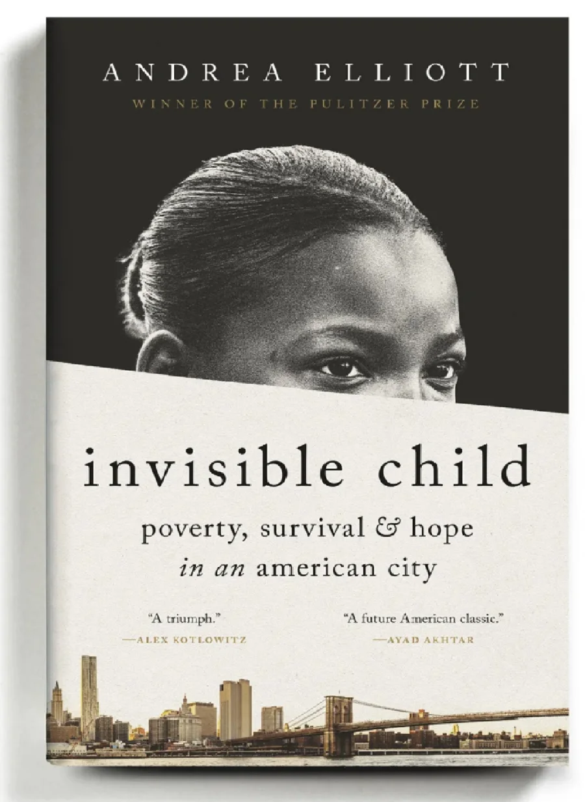
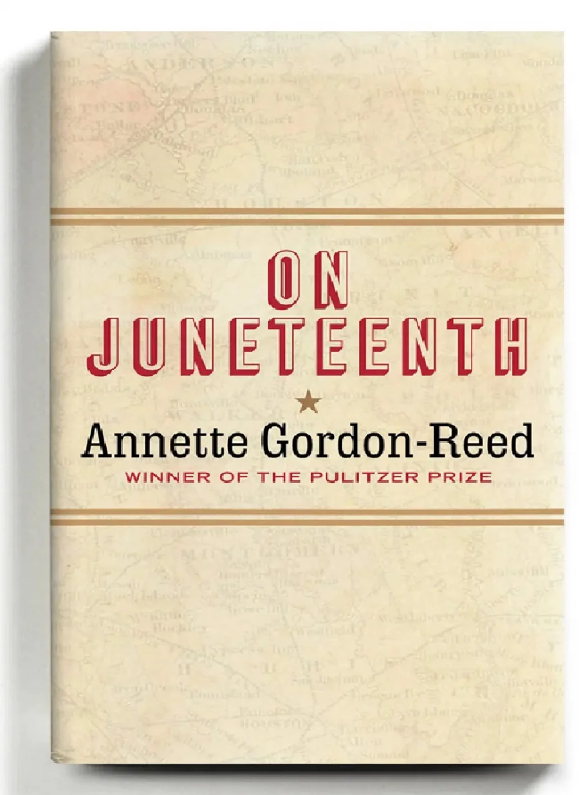
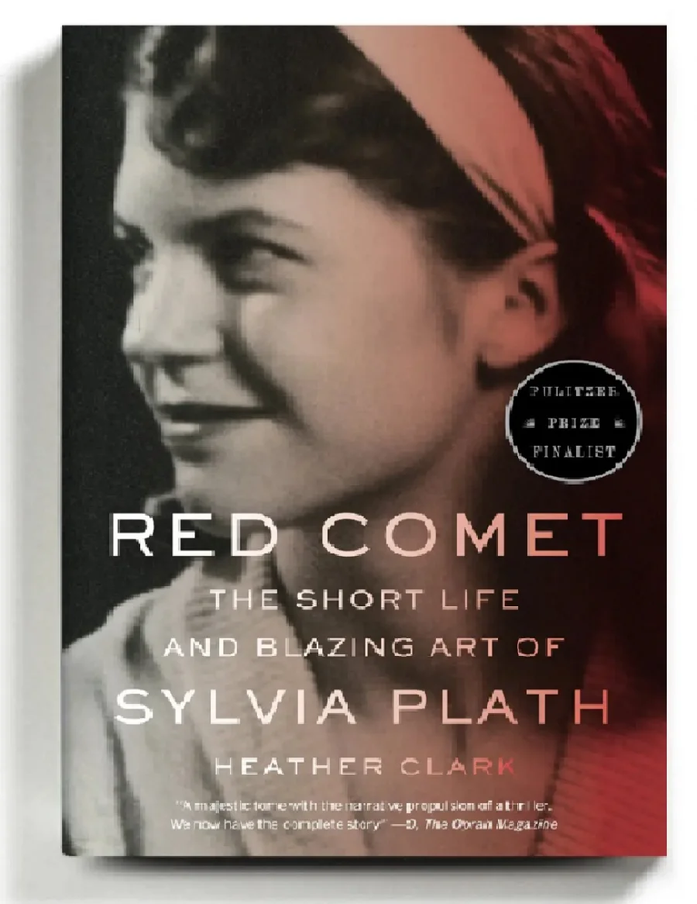

New York Times назвала десять лучших книг 2021 года
Варто розпочати з ТОП найкращих книг в історії світової літератури. І тоді у вас гарантовано:
- покращиться пам'ять
- Лексика збільшиться
- Буде впевненість у спілкуванні з колегами та друзями
- з’явиться концентрація
- Зникне стрес
Як зазначено в описі списку, «Редактори огляду книг Times обрали найкращі твори мистецтва.
Топ-10 найкращих книг 2021 року The New York Times:
Якими гарними ми були (How Beautiful We Were), Імболо Мбуе
Роман починається з 1980 року у вигаданому Африканському селі Косава, куди приїхали представники американської нафтової компанії, щоб зустрітися з місцевими жителями, чиї діти вмирають через екологічний хаос».
Близкість (Intimacies), Кеті Кітамура
«У четвертому романі Кітамури безіменний судовий перекладач у Гаазі отримує завдання занурюватися в Голоси та історії військових злочинців ».
Любовні пісні W.E.B. Du Bois (The Love Songs of W.E.B. Du Bois), Оноре Фанон Джефферс
Роман розповідає про темношкіру дівчину Айлі Перл Гарфілд, що росте в кінці 20 століття та про "пісні" її предків, корінних американців ".
Ніхто не говорить про це (No One Is Talking About This), Патрисія Локвуд
В романі вона описує задоволення і позбавлення життя, розділеного між спілкуванням в Інтернеті та в реальному житті ».
Коли ми перестаємо розуміти світ (When We Cease to Understand the World), Бенджамін Лабатут
Автор майстерно поєднує історії найбільших мислителів 20 століття, щоб вивчити екстаз та агонію науковоих проривів: їх величезні досягнення для суспільства, а також їх складні людські втрати ».
Копенгагенська трилогія: Дитинство, Молодість, Залежність: Childhood; Youth; Dependency), Туве Дітлевсен
Один том детально описує складну освіту, кар’єрний шлях та нещадні уподобання: це потужна історія про боротьбу за примирення мистецтва та життя "..
Як передається слово: розплата з історією рабства в Америці (How the Word Is Passed: A Reckoning With the History of Slavery Across America), Клінт Сміт.
«Для цієї своєчасної книги Сміт, поет та журналіст, об'їхав місця, які мають ключове значення для історії рабства та його сучасної спадщини, включаючи Монтічелло Томаса Джефферсона, Анголу, в'язницю штату Луїзіана, та цвинтар конфедератів. … Сміт підносить дзеркало до непростим відносинам Америки з її минулим
Невидима дитина: бідність, виживання та надія в американському місті (Invisible Child: Poverty, Survival and Hope in an American City), Андреа Елліотт
«Щоб продовжити свою гучну в 2013 році серію статей для газети Таймс про Дасані Коутс, бездомну нью-йоркській школярці, та її сім'ї, Еліотт провела роки, слідуючи за своїми підопічними в їх повсякденному життя - притулки, школи, зали суду та соціальні служби. Книга, яку вона створила, - це глибокий репортаж, елегантно написаний і пронизаний шаленою любов'ю та дотепними спостереженнями Дасані та її матері».
У День Свободи (On Juneteenth), Аннетт Гордон-Рід
«Ця книга поєднує історію та мемуари в короткому томі, проникливому, зворушливому та мужньому. Досліджуючи расові та соціальні складності Техасу, свого рідного штату, Гордон-Рід просить читачів відійти від поточних гарячих дебатів і більш тонко поглянути на історію та сюрпризи, які вона може піднести».
Червона комета: коротке життя та яскраве мистецтво Сильвії Плат (Red Comet: The Short Life and Blazing Art of Sylvia Plath), Хізер Кларк
«Сміливо братися за нову біографію Плат (поетеса Сільвія Плат), чиє життя та смерть через самогубство в 30 років у 1963 році були ретельно проаналізовані вченими. Тим не менш, цей скрупульозно досліджений і несподівано захоплюючий портрет є монументальним здобутком».